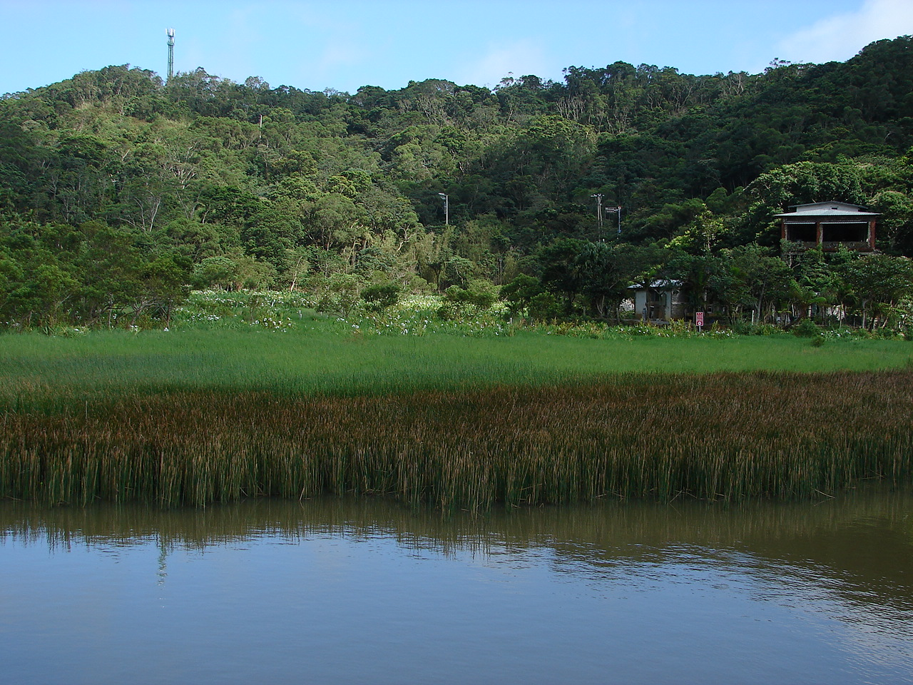

東源湖(哭泣湖)
東源湖在排灣族語中，也稱作「哭泣湖」，絕不是因為這湖泊有甚 麼淒美的愛情故事。 而是「哭泣湖」的哭泣二字，在排灣族母語的解釋是水流匯集的意 思，東源湖水源豐富，孕育了許多動植物， 野薑花隨處可見，更有台灣珍稀水生植物台灣水韭。 東源湖被深山峻嶺包圍著，而湖色在藍天青山之中呈現美麗色澤， 讓人身在其中有股濃濃幸福感受。
資訊取自: https://www.walkerland.com.tw/article/view/154673
照片取自:牡丹鄉公所